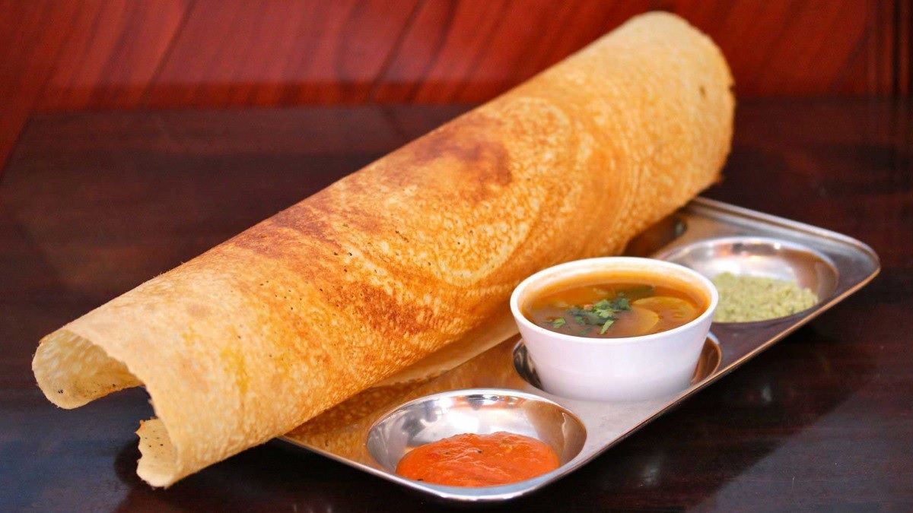

Masala Dosa is an easy and popular, tasty south indian staple breakfast recipe made with rice and urad dal.

Ingredients
For Dosa Batter
3 Cups Sona masuri rice
½ TspMethi / fenugreek seeds
Water (For soaking)
1 Cup Urad dal
2 Tbsp Toor dal
2 TbspChana dal
2 cupPoha / Avalakki (rinsed)
For Aloo Bhaji
2 Tbsp Oil
1 TspMustard
1 Tsp Urad Dal
1 tsp Chana Dal
1 Dried Red chilli
Few Curry Leaves
Pinch Of Hing / asafoetida
2 chillies (finely chopped)
1 inch ginger (finely chopped)
1 Onion (Sliced)
1/4 Tsp Tumeric
1 Tsp Salt
3 Potatoes (Boiled and Mashed)
2 tbsp Coriander (Finely Chopped)
2 tbsp Lemon Juice
Preparation
For Masala Dosa Batter Preparation:
Firstly, in a large bowl take 3 cup sona masuri rice and ½ tsp methi.
Rinse well and soak in enough water for 4 hours.
In another bowl take 1 cup urad dal, 2 tbsp toor dal and 2 tbsp chana dal.
Rinse well and soak in enough water for 2 hours.
After soaking dal for 2 hours, drain off the water and transfer to the grinder. you can also grind in mixi if you do not have access to a grinder.
Add water as required and blend to smooth paste.
Scrape sides. the smooth and fluffy batter will be ready after 40 minutes.
Transfer the batter to a large vessel and keep aside.
In the same grinder add soaked rice and 1 cup rinsed poha.
Add water slowly and scrape the sides. Blend to a coarse paste.
Transfer the rice batter to the same urad dal batter.
Mix well making sure everything is well combined.
Ferment in a warm place for at least 8 hours or until the batter doubles in volume. if you are living in a cold climate, then you can place the batter in the warm oven (just heat the oven until it turns slightly warm and then turn off) to ferment.
Once the batter is well fermented, mix gently, without disturbing the air pockets.
Transfer 4 cups of fermented batter to a small bowl and add 1 tsp salt.
Mix well until the salt is well combined. Masala dosa batter is ready. keep aside.
For Aloo Bhaji Preparation:
Firstly, in a large kadai heat 2 tbsp oil and splutter 1 tsp mustard, 1 tsp urad dal, 1 tsp chana dal, 1 dried red chilli, few curry leaves, pinch hing.
Now add 2 chilli and 1 inch ginger. Saute well.
Also, add 1 onion and saute until onions shrink slightly.